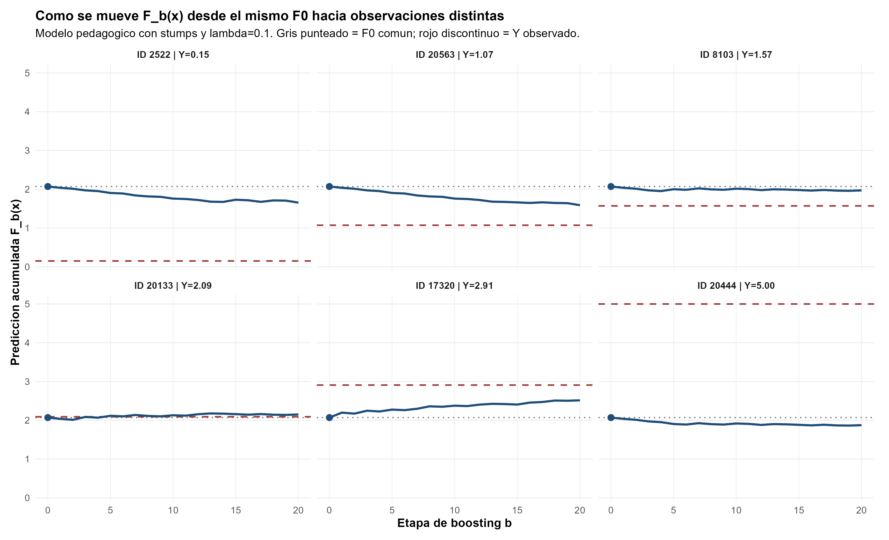
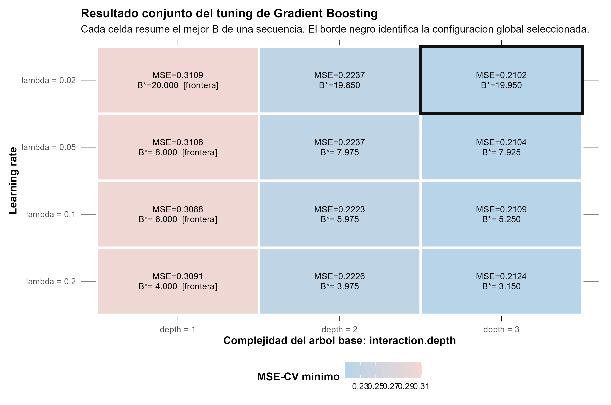
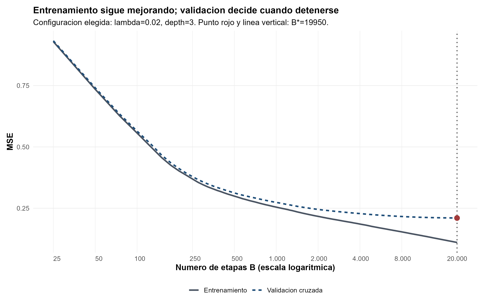
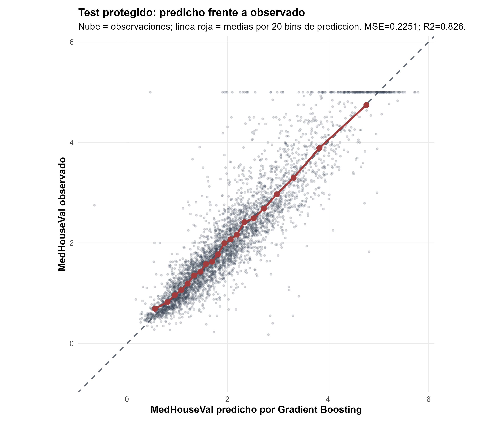
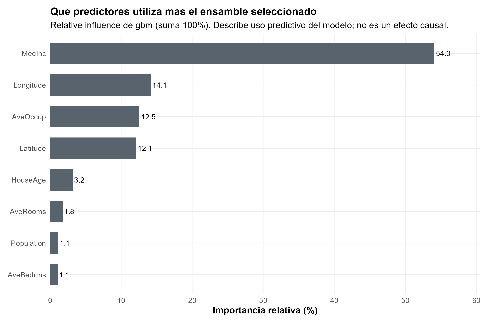
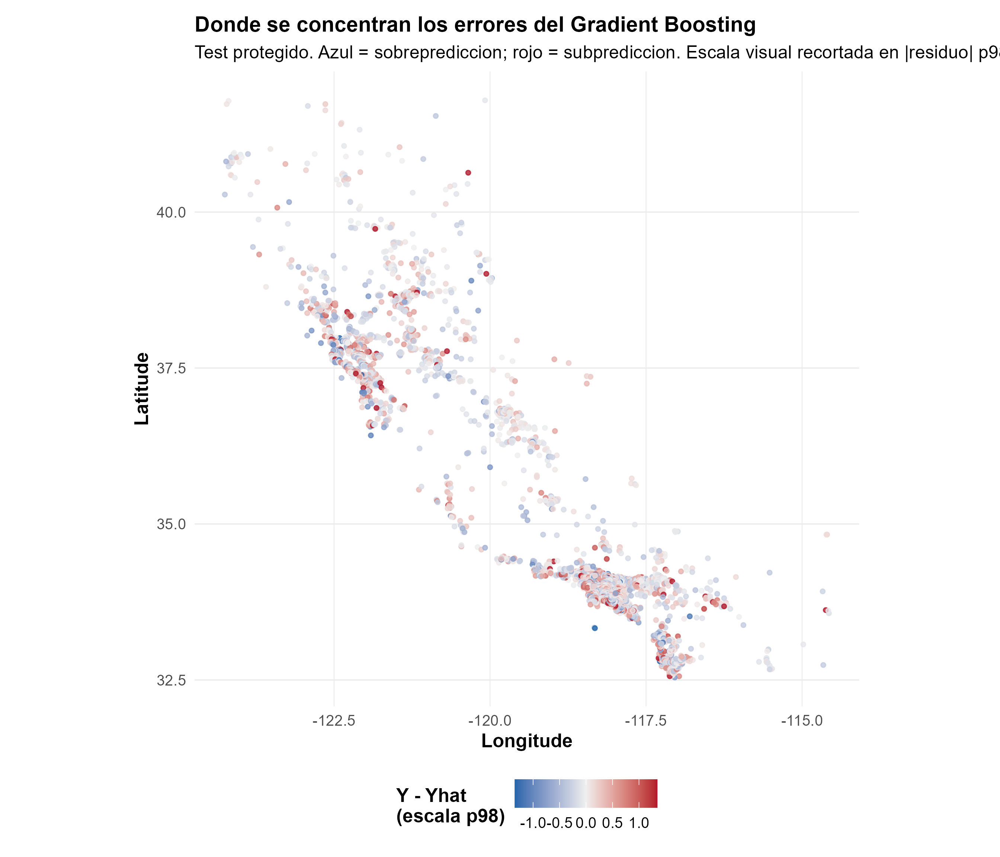

California Housing: aprender corrigiendo los errores que quedan
Gradient Boosting construye una predicción secuencial y la validación decide hasta dónde seguir corrigiendo
Regresión · Gradient Boosting · Validación cruzada
Gradient Boosting no promedia árboles independientes: cada etapa observa el error que todavía queda y añade una corrección pequeña. La validación decide cuándo esa secuencia deja de mejorar fuera de muestra.
California Housing permite ver por qué número de etapas, learning rate y complejidad del árbol base deben regularizarse en conjunto, sin convertir la configuración ganadora en una receta universal.
Observaciones
20.640
Grupos censales; ocho predictores y valor mediano de vivienda.
Test protegido
4.128
Las otras 16.512 observaciones forman desarrollo.
MSE test
0,2251
Frente a 1,2935 al predecir siempre la media de desarrollo.
\(R^2\) test
0,8259
Resultado externo de la configuración cerrada en desarrollo.
La media es punto de partida y benchmark
La tarea es predecir MedHouseVal, el valor mediano de vivienda de cada grupo censal de California en unidades de USD 100.000, a partir de ocho variables demográficas, habitacionales y geográficas. Antes de construir árboles, el procedimiento separa 4.128 observaciones como test protegido y reserva 16.512 para aprender la secuencia completa.
Bajo pérdida cuadrática, el mejor predictor constante dentro de desarrollo es su media:
\[ F_0(x)=\bar y_{\mathrm{dev}}=2{,}0705. \]
Ese mismo valor cumple dos funciones. Es el punto común desde el que comienza Gradient Boosting y es el benchmark ingenuo que se aplicará sin cambios al test. La comparación final pregunta cuánto valor predictivo agrega corregir sistemáticamente esa constante.
Cada árbol corrige una parte del error pendiente
En la primera etapa, cada observación deja un residuo \(r_i^{(1)}=y_i-F_0(x_i)\). Un árbol no memoriza esos residuos uno por uno: aprende regiones del espacio de predictores donde las correcciones se parecen. Su aporte se incorpora con un paso de tamaño \(\lambda\):
\[ F_1(x)=F_0(x)+\lambda h_1(x). \]
Luego se recalculan residuos contra \(F_1\), otro árbol intenta aproximarlos y la secuencia continúa. La película conceptual es \(F_0 \rightarrow\) residuo \(\rightarrow\) árbol \(\rightarrow\) corrección pequeña \(\rightarrow\) nuevo residuo. El bloque demostrativo del informe usa stumps y \(\lambda=0{,}10\) para hacer visible ese mecanismo sobre observaciones reales; está separado del tuning final.

Esta dependencia entre etapas distingue Boosting de los ensambles de la ficha anterior. En Bagging y Random Forest los árboles pueden construirse esencialmente en paralelo y después agregarse. En Boosting, el árbol \(b\) necesita conocer qué error dejó el ensamble hasta \(b-1\).
Tres controles actúan en conjunto
La complejidad no se resume en contar árboles. Intervienen tres decisiones relacionadas:
- \(B\) indica cuántas correcciones se acumulan.
- El learning rate \(\lambda\) reduce el tamaño de cada paso; pasos pequeños suelen necesitar más etapas.
interaction.depthdetermina qué estructura puede capturar cada árbol base: un stump solo introduce una división, mientras árboles más profundos pueden representar interacciones.
Por eso 19.950 árboles con \(\lambda=0{,}02\) no significan lo mismo que 3.150 con \(\lambda=0{,}20\). El tuning compara secuencias completas y selecciona su mejor prefijo mediante CV de cinco folds sobre desarrollo.

La configuración seleccionada es \(\lambda=0{,}02\), profundidad 3 y \(B=19.950\), con MSE-CV 0,2102. Pero el ganador exacto vive dentro de una meseta: con profundidad 3, \(\lambda=0{,}05\) obtiene 0,2104 y \(\lambda=0{,}10\), 0,2109. Las diferencias son mucho menores que los errores estándar descriptivos cercanos a 0,0042.
La señal más clara no está en una diezmilésima entre learning rates, sino en la profundidad. Los mejores árboles de profundidad 3 superan a los de profundidad 2, cuyo MSE-CV ronda 0,222, y con mayor claridad a los stumps, alrededor de 0,309-0,311. En esta grilla, cada etapa necesita suficiente capacidad para corregir patrones que una única división no representa.
La validación decide cuándo dejar de corregir
El MSE de entrenamiento continúa bajando a medida que se agregan árboles y llega a 0,1103 en \(B=20.000\). Si se eligiera \(B\) por ajuste interno, la regla sería seguir sumando etapas dentro del rango explorado. La CV responde una pregunta distinta: hasta dónde las nuevas correcciones todavía ayudan a observaciones que no participaron en construirlas.

El mínimo formal ocurre en 19.950, apenas 50 árboles antes del techo de 20.000. El MSE-CV cambia solo en aproximadamente \(5\times10^{-6}\) al llegar a 20.000. Esa planicie importa más que el número exacto: la evidencia respalda una región de aprendizaje lento con profundidad 3, no una cantidad mágica de árboles.
El test confirma una mejora grande frente a la media
Una vez cerrados los hiperparámetros, el modelo se reajusta sobre todo desarrollo y el test se abre una sola vez.
| Modelo | MSE test | RMSE test | MAE test | \(R^2\) test |
|---|---|---|---|---|
| Media de desarrollo | 1,2935 | 1,1373 | 0,8996 | -0,0001 |
| Gradient Boosting | 0,2251 | 0,4745 | 0,3112 | 0,8259 |
Gradient Boosting reduce 82,6 % el MSE respecto de repetir la media de desarrollo. El MSE externo es aproximadamente 7,1 % mayor que el MSE-CV usado para seleccionar, una diferencia esperable entre dos objetos distintos: CV elige dentro de desarrollo; test evalúa una configuración ya cerrada.

La mejora es grande en esta partición, pero no constituye una prueba de extrapolación a una región geográfica completamente nueva. Además, MedHouseVal acumula observaciones en su límite superior, una característica visible en el gráfico que condiciona el comportamiento en valores altos.
Qué información termina utilizando el ensamble
La importancia relativa del modelo concentra 54,0 % en MedInc. Le siguen Longitude con 14,1 %, AveOccup con 12,5 % y Latitude con 12,1 %; juntas reúnen aproximadamente 92,8 % de la importancia total. La geografía y la ocupación aportan señal predictiva más allá del ingreso.

Estas importancias describen cuánto utiliza el ensamble cada variable; no son coeficientes ni efectos de intervención. Lo mismo vale para las dependencias parciales del informe: resumen cómo cambia la predicción del modelo al mover un predictor dentro del soporte observado, pero no responden qué ocurriría al intervenir sobre ingreso, localización u ocupación.
El error conserva estructura geográfica
Para cada observación del test, el residuo se define como
\[ e_i=y_i-\widehat y_i. \]

Los puntos rojos son residuos positivos —el modelo subpredice— y los azules, residuos negativos —el modelo sobrepredice—. El recorte en el percentil 98 afecta solo la escala cromática del mapa: las métricas se calcularon con los residuos originales, sin recorte.
Aunque el desempeño agregado es bueno, el mapa muestra agrupaciones locales de errores con signo y magnitud parecidos. Latitude y Longitude forman parte de los predictores, pero una partición aleatoria no es validación espacial: el test evalúa nuevas observaciones de la misma población muestreada, no extrapolación a una zona geográfica nueva. Este es un diagnóstico posterior al test; no intervino en la selección, el tuning ni el reajuste del modelo.
Una secuencia útil, no un hiperparámetro mágico
La evidencia favorece árboles base de profundidad 3 y una región de learning rates bajos o intermedios con desempeño muy parecido. La validación frena la secuencia en desarrollo y el test confirma una mejora predictiva sustantiva frente a la media. La decisión defendible es adoptar la configuración seleccionada por la regla preestablecida sin atribuir significado especial a 19.950 ni a \(\lambda=0{,}02\) por sí solos.
El alcance sigue siendo predictivo: una única partición aleatoria no representa deriva temporal ni una transferencia geográfica completa, los árboles no extrapolan suavemente fuera del soporte y los diagnósticos agregados no identifican mecanismos causales.
California Housing con CART, Bagging y Random Forest muestra la historia complementaria: primero una estructura interpretable y luego árboles construidos esencialmente en paralelo y agregados para estabilizar la predicción.
Fuente: informe final «Taller 10A: California Housing - Gradient Boosting de regresión». Figuras originales del informe reutilizadas en PNG; las cifras se verificaron contra los outputs finales y no se generaron estimaciones nuevas.